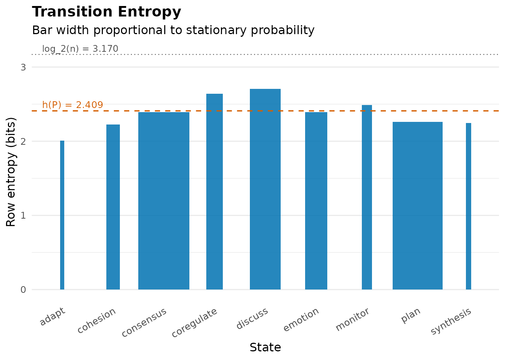
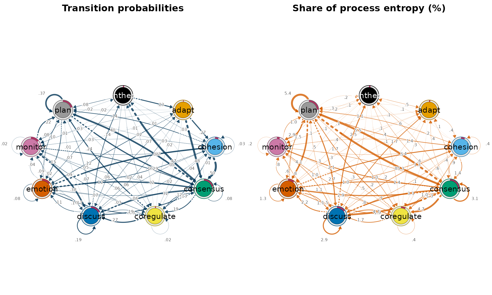
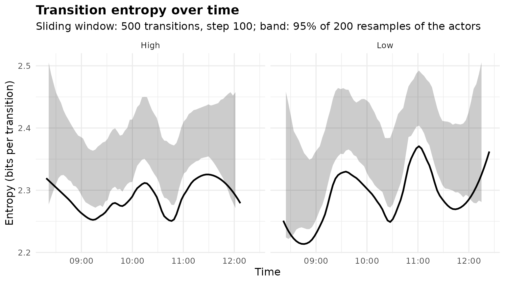
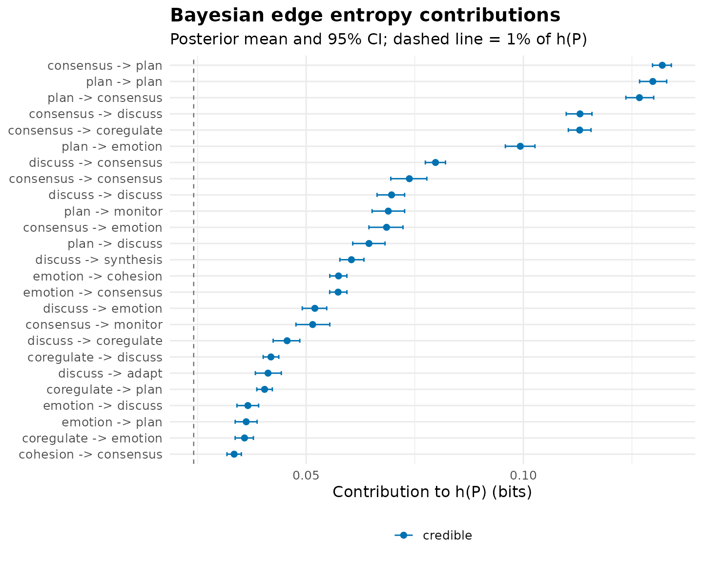

Transition Matrix Entropy
Mohammed Saqr
University of Eastern FinlandSource:
vignettes/transition-entropy.Rmd
transition-entropy.RmdHow predictable is a sequential process? The entropy rate of its transition matrix answers with a single number: the average uncertainty, in bits, about the next state given the current one (Shannon, 1948; Cover & Thomas, 2006, ch. 4),
where is the transition matrix and its stationary distribution (the eigenvector of at ; Kemeny & Snell, 1976). This is the quantity Krejtz et al. (2015) introduced to behavioral research as gaze transition entropy and Krejtz et al. (2025) track in real time as mobile transition matrix entropy. Nestimate (Saqr et al., 2026) computes it for any transition network (Saqr et al., 2025a, 2025b), decomposes it per state and per edge, tracks it over time, and estimates it with Bayesian credible intervals.
Throughout we use the bundled group_regulation_long
data: 27,533 timestamped regulation actions by students collaborating in
groups, coded into nine states, synthetically generated from the
group_regulation dataset of the tna package (Tikka et al.,
2025).
The entropy of a transition network
transition_entropy() accepts a fitted network, a
transition matrix, or sequence data.
library(Nestimate)
net <- build_network(group_regulation_long, method = "relative",
actor = "Actor", action = "Action", time = "Time")
te <- transition_entropy(net)
te
#> Transition Entropy (9 states, bits; ceiling = 3.170)
#>
#> raw normalised
#> Entropy rate h(P) = 2.409 bits 0.760
#> Stationary H(pi) = 2.782 bits 0.878
#> Redundancy H(pi)-h = 0.373 bits 0.134
#>
#> Normalised: h(P) and H(pi) are raw / log_2(n_states) (0 = deterministic, 1 = uniform);
#> redundancy is the relative redundancy (H(pi) - h(P)) / H(pi), not raw / log_2(n_states).The call computes the entropy rate , the stationary entropy (the ceiling that would apply if consecutive actions were independent), and their difference, the redundancy. The process runs at 2.41 bits per step against a ceiling of ; the normalized entropy 0.76 is the scale-free version Krejtz et al. (2025) report. Regulation is far from scripted, but knowing the current action removes 13% of the uncertainty about the next one (relative redundancy 0.134, that is 0.373 of the 2.78 bits of ): sequence carries real information, which is the empirical justification for modeling transitions rather than activity frequencies alone.
Which states are decision points?
is the stationary-weighted sum of per-state branching entropies . The summary and plot display those terms.
summary(te)
#> state stationary row_entropy row_entropy_norm contribution
#> 1 consensus 0.24958879 2.392758 0.7548312 0.59720568
#> 2 plan 0.24486443 2.260687 0.7131673 0.55356184
#> 3 discuss 0.15179366 2.706071 0.8536704 0.41076445
#> 4 emotion 0.10912423 2.390486 0.7541145 0.26085998
#> 5 coregulate 0.08189694 2.639990 0.8328240 0.21620706
#> 6 cohesion 0.06666042 2.224856 0.7018641 0.14830987
#> 7 monitor 0.04864371 2.487425 0.7846952 0.12099758
#> 8 synthesis 0.02659239 2.248109 0.7091995 0.05978260
#> 9 adapt 0.02083543 2.005698 0.6327271 0.04178956
#> contribution_pct
#> 1 24.785681
#> 2 22.974341
#> 3 17.047856
#> 4 10.826408
#> 5 8.973189
#> 6 6.155268
#> 7 5.021733
#> 8 2.481142
#> 9 1.734382
plot(te)
Tall bars are decision points: states whose continuation is genuinely open. Short bars are scripted states whose next step is nearly determined. Bar width is the stationary probability , so bar area is the state’s additive contribution to the process entropy.
The entropy network
is a sum over transitions: edge
contributes exactly
.
entropy_network() returns the fitted network with those
terms as edge weights — the same object class as
build_network(), so it prints, summarises, and plots
identically. With scaling = "share" the weights become
percentages of
and sum to 100.
ent <- entropy_network(net, scaling = "share")
ent
#> Network (method: entropy) [directed]
#> Weights: [0.069, 5.482] | mean: 1.282
#>
#> Strongest edges (10 of 78):
#> from to weight
#> consensus plan 5.482
#> plan plan 5.393
#> plan consensus 5.265
#> consensus discuss 4.696
#> consensus coregulate 4.693
#> plan emotion 4.130
#> discuss consensus 3.315
#> consensus consensus 3.065
#> discuss discuss 2.897
#> plan monitor 2.860
#>
#> extract_edges(include_self = TRUE) lists every edge; extract_transition_matrix() gives the weight matrix;
#> extract_initial_probs() the initial probabilities.
#>
#> Scaling: share
op <- par(mfrow = c(1, 2))
cograph::splot(net, minimum = 0, title = "Transition probabilities",
edge_label_digits = 2)
cograph::splot(ent, title = "Share of process entropy (%)")
par(op)The two panels separate structure from uncertainty. The probability panel shows where the process goes; the entropy panel shows where it is unpredictable. High-probability routine transitions shrink in the entropy view — observing the near-inevitable carries little information — while the thick entropy edges mark frequent transitions whose outcome is genuinely open. No new quantity is estimated: the entropy network displays the summands of the equation above, so every number inherits the defensibility of itself.
Entropy over time
A single
summarises the whole observation period. Sliding a window across the
transition stream — the design of Krejtz et al. (2025), who use
30-second windows over gaze transitions — turns entropy into a process
measure. entropy_trajectory() builds transitions within
each actor’s sequence, orders them in time, and computes one entropy
value per window.
tr <- entropy_trajectory(group_regulation_long,
action = "Action", actor = "Actor", time = "Time",
group = "Achiever", window = 500, step = 100)
summary(tr)
#> group windows mean sd min max first last
#> 1 High 123 2.285872 0.04313978 2.175275 2.394429 2.309764 2.301800
#> 2 Low 124 2.294082 0.05803398 2.142537 2.436502 2.233659 2.347734
#> change
#> 1 -0.007963838
#> 2 0.114074796
plot(tr, seed = 1)
The entropy is computed in windows of 500 transitions stepped by 100;
the curve is the loess trend of those windows (Cleveland, 1979) per
achievement group, and the band its 95% interval from 200 resamples of
the actors. Declining entropy is routinization — the group settling into
predictable regulation; rising entropy is exploration; a level shift
marks a phase change. The change column of the summary
(last window minus first) gives each group’s net trend. Within a window
the chain is routinely non-ergodic, so the per-window estimator weights
rows by observed occupancy rather than the eigenvector stationary
distribution; over long stationary stretches the two coincide.
Bayesian estimation
Plug-in entropy is biased in small samples (Paninski, 2003) and
treats an edge observed three times exactly like one observed three
thousand times. entropy_bayes() places an independent
Dirichlet posterior on each row of the transition matrix (the Jeffreys
(1946) prior, 0.5, by default) and pushes Monte Carlo draws through the
entropy formula, so every quantity — the entropy rate, each state’s
branching entropy, each edge’s contribution — arrives with a credible
interval that reflects how much data supports it.
eb <- entropy_bayes(net, draws = 1000, seed = 1)
eb
#> Bayesian Transition Entropy (9 states, bits; Dirichlet prior 0.5, 1000 draws)
#>
#> entropy_rate: 2.411 [2.396, 2.425]
#> stationary_entropy: 2.783 [2.771, 2.796]
#> redundancy: 0.373 [0.361, 0.384]
#>
#> Edges: 78 observed; 31 credible (share of h(P) credibly > 1%).
#> Use summary() for the edge table and plot() for the posterior.The posterior mean (2.411 bits) sits next to the plug-in estimate
(2.409): with 27,533 actions every row of the matrix is well populated,
so the posterior adds little beyond the interval, which quantifies how
firmly the data pin down the process entropy. On sparse data the two
move apart, because the posterior integrates over count uncertainty
instead of taking the point estimate at face value. An edge is flagged
credible when its share of
credibly exceeds min_share (1% by default). The result also
carries the entropy network with all other edges zeroed — the stable
entropy skeleton, safe to display without overreading thin cells.
plot(eb)
Blue intervals are stable estimates; grey intervals rest on too few observations to distinguish their entropy share from noise at the 95% level.
When to use which
-
One process, one number —
transition_entropy(): how predictable is the process; is sequence informative at all (redundancy). -
Where the uncertainty sits —
plot(transition_entropy())for states,entropy_network()for transitions. Both display terms of the same equation; usescaling = "share"for percentage labels. -
Change over time —
entropy_trajectory(): routinization, exploration, phase shifts. Report the window size and step. -
Sparse data or formal comparison —
entropy_bayes(): credible intervals for , per-state and per-edge; group differences via the posterior draws; its pruned entropy network for a display without unstable edges.
References
Cleveland, W. S. (1979). Robust locally weighted regression and smoothing scatterplots. Journal of the American Statistical Association, 74(368), 829–836. https://doi.org/10.1080/01621459.1979.10481038
Cover, T. M., & Thomas, J. A. (2006). Elements of information theory (2nd ed.). Wiley. https://doi.org/10.1002/047174882X
Jeffreys, H. (1946). An invariant form for the prior probability in estimation problems. Proceedings of the Royal Society of London. Series A. Mathematical and Physical Sciences, 186(1007), 453–461. https://doi.org/10.1098/rspa.1946.0056
Kemeny, J. G., & Snell, J. L. (1976). Finite Markov chains. Springer.
Krejtz, K., Duchowski, A., Szmidt, T., Krejtz, I., González Perilli, F., Pires, A., Vilaró, A., & Villalobos, N. (2015). Gaze transition entropy. ACM Transactions on Applied Perception, 13(1), 1–20. https://doi.org/10.1145/2834121
Krejtz, K., Hughes, C. J., Stasiak, I., Duchowski, A., & Krejtz, I. (2025). Real-time mobile transition matrix entropy based on eye and head movements. In Proceedings of the 2025 Symposium on Eye Tracking Research and Applications (ETRA ’25) (pp. 1–8). ACM. https://doi.org/10.1145/3715669.3723128
Paninski, L. (2003). Estimation of entropy and mutual information. Neural Computation, 15(6), 1191–1253. https://doi.org/10.1162/089976603321780272
Saqr, M., López-Pernas, S., & Misiejuk, K. (2026). Nestimate: An R package for dynamic, probabilistic, and high order network analysis. Applied Psychological Measurement. https://doi.org/10.1177/01466216261472019
Saqr, M., López-Pernas, S., & Tikka, S. (2025a). Mapping relational dynamics with transition network analysis: A primer and tutorial. In M. Saqr & S. López-Pernas (Eds.), Advanced learning analytics methods: AI, precision and complexity (pp. 371–411). Springer. https://doi.org/10.1007/978-3-031-95365-1_15
Saqr, M., López-Pernas, S., Törmänen, T., Kaliisa, R., Misiejuk, K., & Tikka, S. (2025b). Transition network analysis: A novel framework for modeling, visualizing, and identifying the temporal patterns of learners and learning processes. In Proceedings of the 15th International Learning Analytics and Knowledge Conference (LAK25) (pp. 351–361). ACM. https://doi.org/10.1145/3706468.3706513
Shannon, C. E. (1948). A mathematical theory of communication. Bell System Technical Journal, 27(3), 379–423. https://doi.org/10.1002/j.1538-7305.1948.tb01338.x
Tikka, S., López-Pernas, S., & Saqr, M. (2025). tna: An R package for transition network analysis. Applied Psychological Measurement, 49(6), 326–328. https://doi.org/10.1177/01466216251348840